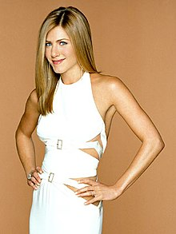
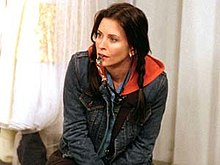
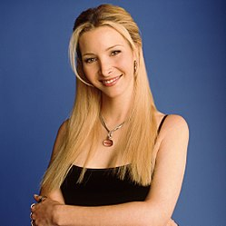
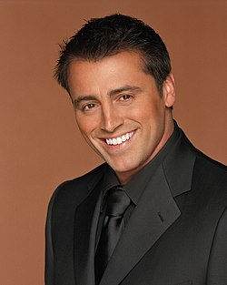
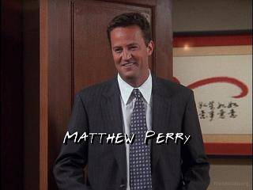

| number | name ofthecharacters | about | image |
| 1 | Rachel Green | A fashion enthusiast and Monica Geller's best friend from childhood. |  |
| 2 | Monica Geller | The mother hen of the group and a chef,known for her perfectionist, bossy, competitive, and obsessive-compulsive nature. |  |
| 3 | Phoebe Buffay | A masseuse and self-taught musician. As a child, Phoebe lived in upstate New York with her mother, until she committed suicide and Phoebe took to the streets. She writes and sings her own strange songs, accompanying herself on the guitar |  |
| 4 | Joey Tribbiani | A struggling actor and food lover who becomes famous for his role on soap opera Days of Our Lives as Dr. Drake Ramoray. Joey has many short-term girlfriends. Despite his womanizing, Joey is innocent, caring, and well-intentioned |  |
| 5 | Chandler Bing | An executive in statistical analysis and data reconfiguration for a large, multinational corporation. Chandler hates this job, although it pays well. He attempts to quit during season one but is lured back with a new office and a pay raise |  |
| 6 | Ross Geller | Monica Geller's older brother, a palaeontologist working at the Museum of Natural History, and later a tenured professor of palaeontology at the New York University | |